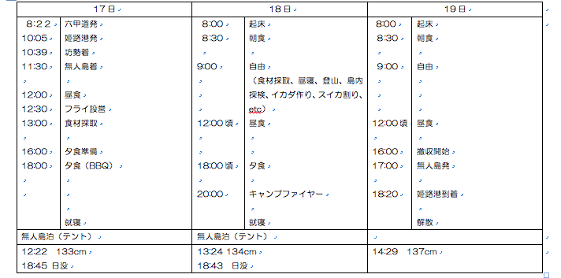
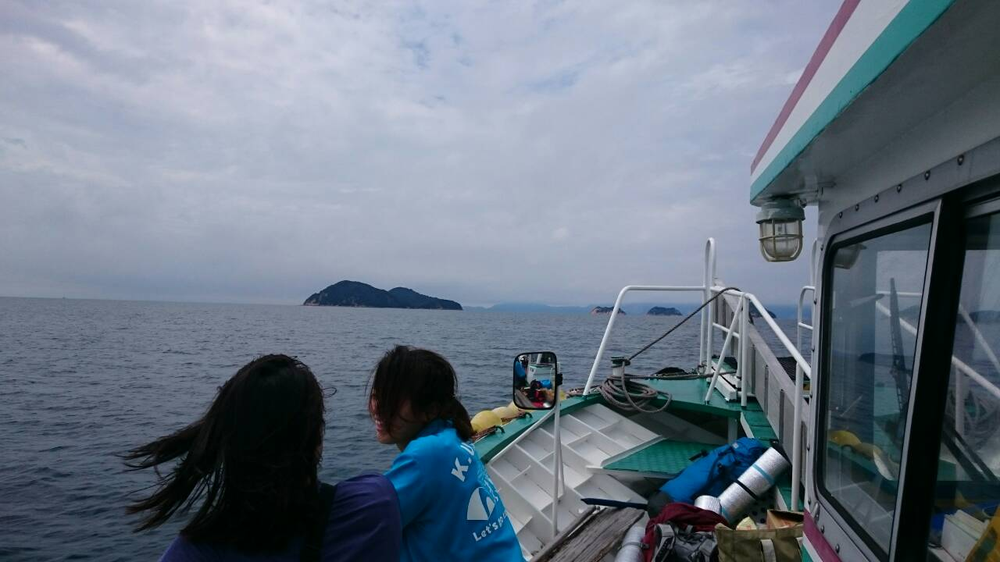
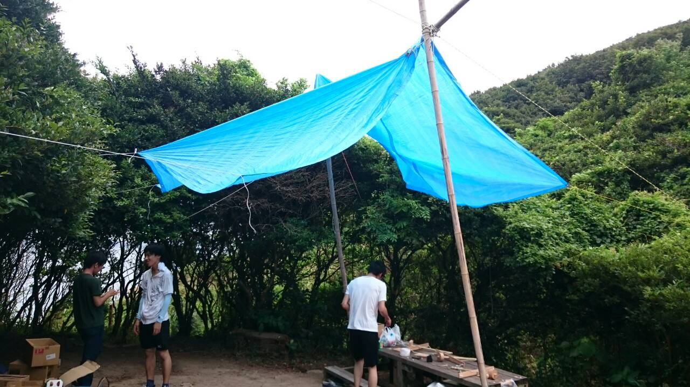
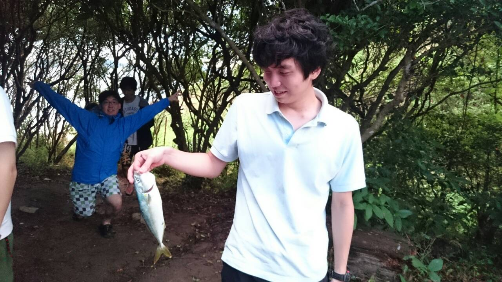
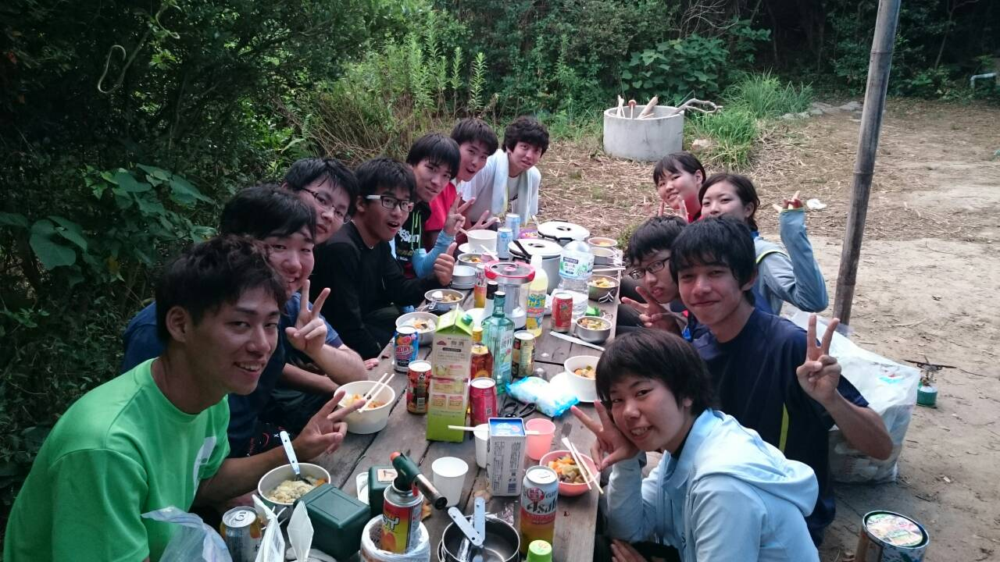

無人島
探検部では例年夏に無人島に行くのが恒例となっています。
去年は瀬戸内海のとある島にて行いました。
これは去年の日程です。

無人島といっても特に決められたことはなく各々好きなことをして楽しみます！
お昼寝したり魚釣りしたり。。。
簡単に日程を紹介していきたいと思います♪
~~~~~~~~~~~~~~~~姫路港発~~~~~~~~~~~~~~~~~

まず１日目は姫路港に集合して船をチャータして向かいました！
もちろんたっぷりお酒とお肉を積んで((((；ﾟДﾟ))))笑
気持よく船に揺られること約３０分で目的地の無人島につきます！
この無人島はもちろんですが電気、ガス、水道が通っておりません
また怪我したら最寄りの病院まで船で行くことになるので、
絶対に怪我してはいけませんよ？？(・・;)
~~~~~~~~~~~~~~~~フライ設営~~~~~~~~~~~~~~~~~

無人島に到着してみんなの荷物と食料を下ろすと最初にフライというものをたてます！
写真で見難いかもしれませんが竹とブルーシートとロープだけでたっているんです！
もちろんこれを立てるのには技術がいりますが優しい先輩？がしっかりと教えてくれます(´∀｀*)ｳﾌﾌ
最初にこれを立ててここを活動拠点とし雨が降っても濡れないようにしておきます
まぁ晴れるにこしたことはないんだけどね
~~~~~~~~~~~~~~~~自由時間~~~~~~~~~~~~~~~~~~~

無人島の生活の大部分は自由時間です！
矢島さんはさっそく海にでかけてなにやら大きい魚をとってきましたΣ(ﾟДﾟ)
もちろんおいしくいただきました＼(^o^)／
各自、海にもぐったりまったりして夕食まで楽しい時間を過ごしました。
~~~~~~~~~~~~~~~~~夕食~~~~~~~~~~~~~~~~~~~

お待ちかねの夕食の時間がきました！
１日目の夜ご飯は持ってきた肉と野菜でBBQです＼(^o^)／
肉は腐ってしまうので今日のうちにたべてしまいます！！
結構量あったなぁ笑
あとお酒の量も←
この日は夜遅くまでめっちゃ綺麗な星空やウミホタルを観察しつつ
猛者は海岸で眠りにつきました笑
一覧へ戻る